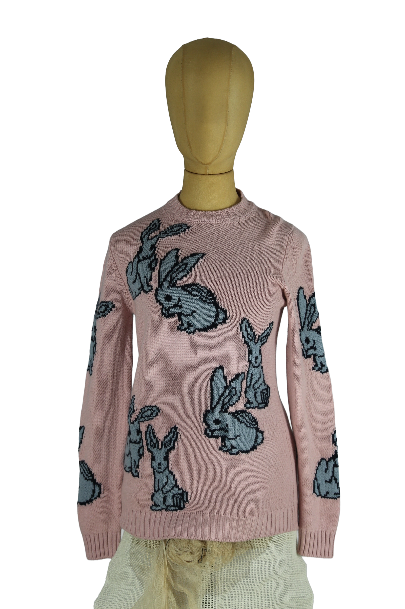

1 / 10Aus dem kuratierten Archiv von Disorder119. Feinstrickpullover von Prada in zartem Rosé mit ikonischem, grafischem Hasenmotiv in Grau-Blau. Das Allover-Design zeigt mehrfach wiederholte Bunny-Figuren, die klar und präzise in den Strick eingearbeitet sind und dem Piece eine verspielte, zugleich kultivierte Anmutung verleihen. Der klassische Rundhalsausschnitt, die langen Ärmel und die sauberen Rippbündchen an Saum, Ärmeln und Kragen sorgen für eine zeitlose, ausgewogene Silhouette. Der fein gestrickte Stoff liegt ruhig am Körper an und verbindet Komfort mit der charakteristischen Prada-Ästhetik zwischen Ironie und Luxus. Ein markantes Sammlerstück mit hohem Wiedererkennungswert. Details: Marke: Prada Farbe: Rosa mit graublauem Motiv Größe: 38 Passform: Körpernah Verschluss: Ohne Verschluss Material: Feinstrick Herstellungsland: Nicht angegeben Fotografie & Passform: Das Kleidungsstück wurde auf unserer Standard-Schneiderpuppe fotografiert, die wir zur konsistenten Darstellung aller Kleidungsstücke verwenden. Maße der Schneiderpuppe: Brustumfang 89 cm Taillenumfang 66 cm Hüftumfang 89 cm Schulterbreite 38 cm Zustand: Guter getragener Zustand mit leichten, altersbedingten Gebrauchsspuren. Rechtliche Hinweise: Verkauf als gebrauchtes Kleidungsstück. Die Beschreibung erfolgt nach bestem Wissen und Gewissen. Farbnuancen und Oberflächenwirkungen können aufgrund von Lichtverhältnissen bei der Fotografie sowie unterschiedlicher Bildschirmdarstellungen leicht vom Original abweichen. Disorder119 steht für sorgfältig kuratierte Designerstücke mit Fokus auf Authentizität, Qualität und zeitlose Relevanz.
Shop-Kontakt noch nicht eingerichtet: WhatsApp-Nummer oder E-Mail-Adresse fehlen in SHOP_CONFIG (index.html).
Disorder119 · Kuratiertes Archiv für Designer-, Vintage- und Contemporary-Mode. Jedes Stück wird einzeln ausgewählt, fotografiert und beschrieben.